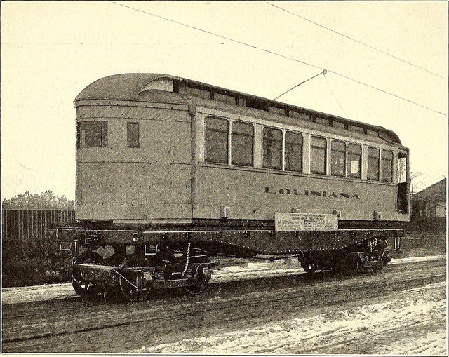
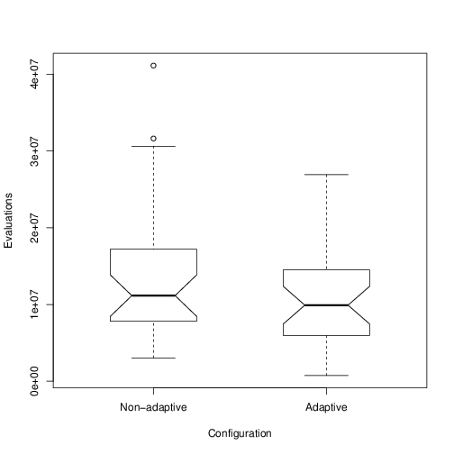

A methodology to develop Service Oriented Evolutionary Algorithms
García-Sánchez, Mora, Castillo, González and Merelo
GeNeura + CITIC for IDC14. Watch this at goo.gl/KRhMi9
Evolutionary algorithms? What's that?

Population-based algorithms
Evolving solutions through natural selection

Select the best, combine and change them, repeat until solution found
Do current EA models have a problem?

Not integrated
Not standardized
Flickr image by Edans https://flic.kr/p/opfTn.
Not dynamic
Flickr image by Book Archive https://flic.kr/p/ouqPNZh.
Service oriented architectures offer
Language-independence
And distribution transparency
Standard service interfaces
Distributed control of nodes
SOMA methodology for service design
Identification
Problem, algorithm and infrastructure domains
Specification
Fitness, population, parameters, operators as services
Implementation and deployment
Choose technology for publication, discovery and distribution: OSGi/WSDL/other

Dynamic binding of services
Operators changed or added during runtime
EAs might fall in local minimum

Some selection operators have higher selection pressure
Image from Library of congress
Binary tournament: greedy
Roulette selection: relaxed

Identification and specification

Dynamic binding rules!